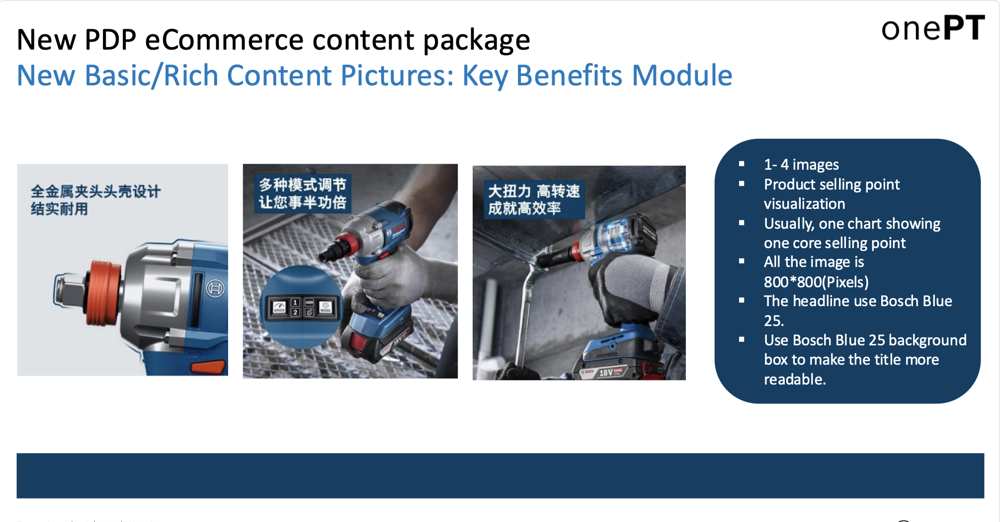
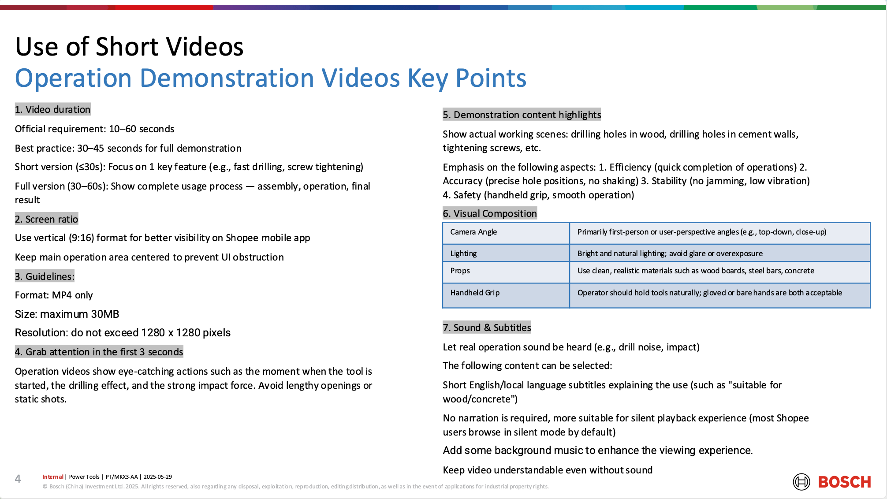
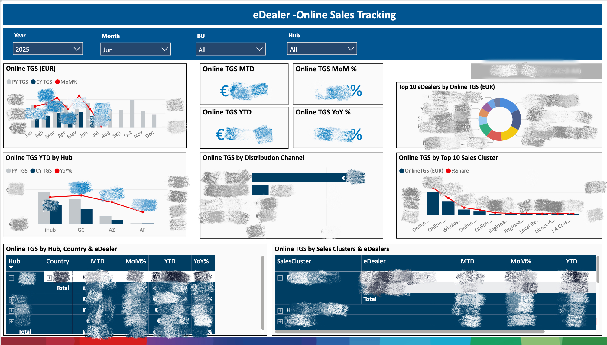
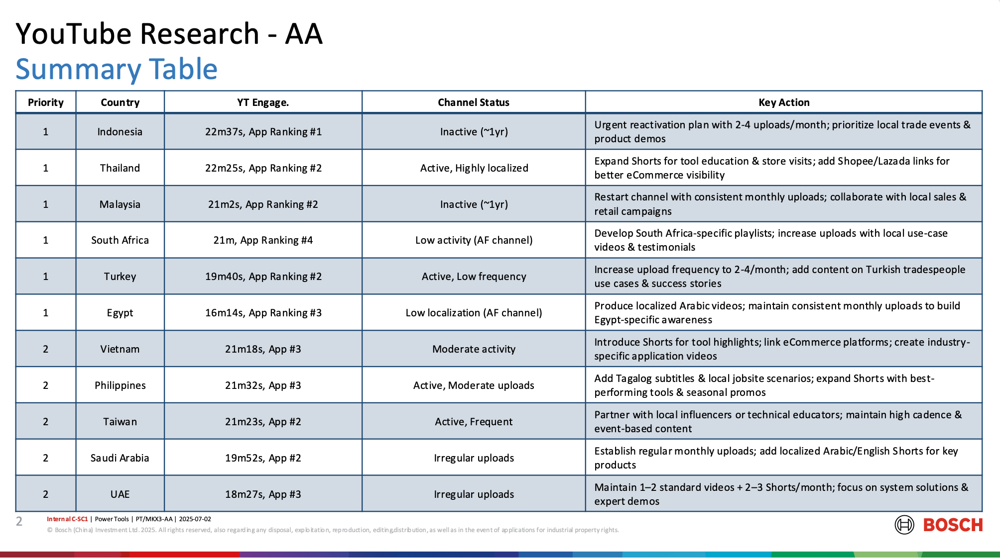
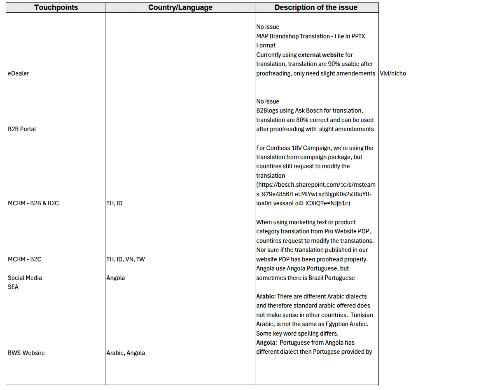
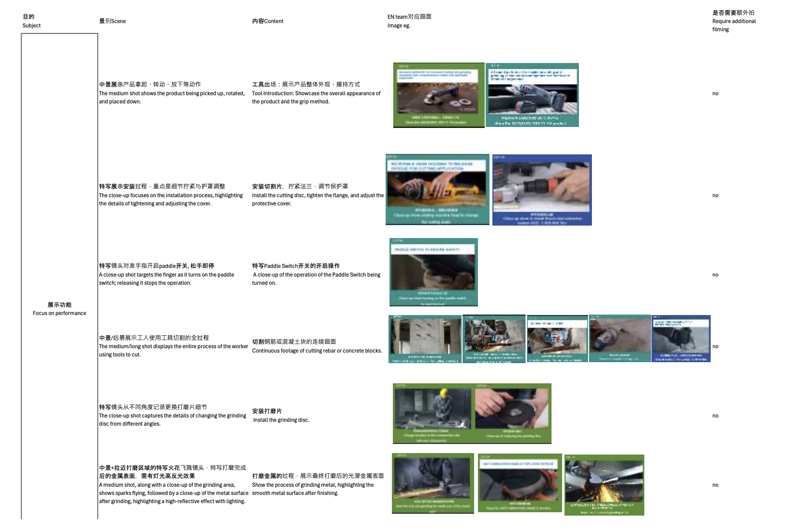

Bosch — eCommerce & Content Strategy
eCommerce and content strategy initiatives supporting localized product experiences across China and Southeast Asian markets — covering PDP guidelines, short video benchmarking, analytics dashboards, and translation workflows.
 Check the Site
Check the Site
Overview
During my internship at Bosch, I contributed to the global eCommerce and digital marketing team — working across content strategy, data analytics, and video production for international markets. The work spanned China, Southeast Asia, the Middle East, and Africa, with a focus on making Bosch's digital presence more locally relevant, consistent, and effective on platforms like Tmall, JD, Shopee, Lazada, and YouTube.
The six projects below represent distinct deliverables across that internship — from product page content guidelines to short video benchmarking, Power BI dashboards, and translation workflow management.
eCommerce Content Creation Guidelines for China
Contributed to Bosch's eCommerce strategy by developing content creation guidelines tailored for the Chinese market. I adapted global PDP modules into localized "Basic" and "Rich" content packages, including product visuals, comparison tables, and feature videos, ensuring alignment with local user behaviors and platform standards (Tmall, JD).
In this project, I supported content rollout for 50+ SKUs, created benchmarks for short video formats, and collaborated across regional markets to enhance visual consistency and user trust. The guidelines not only standardized Bosch's content creation process in China but also improved brand coherence, boosted product appeal, and supported higher conversion rates across online platforms.

Use of Short Videos for Shopee & Lazada
Conducted a benchmarking study on how leading power tool brands (Makita, Dongcheng, TOTAL) use short videos across Shopee and Lazada. I analyzed official introductions, comparison tests, and operation demonstration formats, focusing on duration, screen ratio, camera angles, and content structure.
Based on the findings, I developed best-practice guidelines and crafted operation-based video scripts optimized for mobile UX. These recommendations helped Bosch enhance production efficiency, align with platform standards, and deliver engaging video content that resonates with regional audiences.

Key Touchpoint Dashboard
Developed and maintained a Power BI dashboard to consolidate Bosch's digital marketing data across Meta Ads, CRM, and YouTube, with a focus on tracking eDealer online sales. The dashboard provided a single view of KPIs including impressions, CTR, engagement, and revenue, segmented by region and eDealer — giving the team a consistent, real-time reference point for campaign performance.

YouTube Research – Emerging Markets
Conducted in-depth research on Bosch's YouTube presence across high-priority markets including Southeast Asia, the Middle East, and Africa. I analyzed channel performance metrics (watch time, upload frequency, engagement) and benchmarked against competitors to identify gaps in localization, content cadence, and eCommerce integration.
Based on the findings, I provided market-specific recommendations such as reactivating inactive channels, expanding Shorts, improving local language support, and linking to Shopee/Lazada. These insights guided Bosch's regional digital strategy, helping align YouTube content with user behavior and market potential.

Translation Workflow & Issues Management
Supported Bosch's translation workflow across multiple touchpoints including eDealer, MCRM, and social media assets. I identified language inconsistencies (e.g., local dialects, punctuation errors, misapplied translations) and coordinated proofreading feedback from 8+ markets to improve accuracy and efficiency across all localized content.

Product Feature & Safety Video – Shooting Script
Created a detailed short video shooting script for Bosch's product feature and safety demonstration video. The script covered full user scenarios from product introduction and installation to real cutting and grinding operations, with close-ups highlighting sparks, grip, and tool performance.
Special focus was placed on safety features, including the Paddle Switch (instant stop), Kickback Control, and power cut-off protection. By combining live-action shots with animated explanations, the script ensured both technical clarity and strong visual storytelling.

Reflection
This internship gave me a ground-level view of how global content strategy actually works across diverse markets — the gap between global brand guidelines and local platform reality is significant, and bridging it requires both analytical and creative skills working together.
Localization is design
Adapting global PDP content for Tmall and JD involved more than translation. User behavior, trust signals, and content expectations differ materially between markets — treating localization as a purely linguistic task misses the most important design work.
Data and content strategy together
Building the Power BI dashboard while also developing content guidelines showed how these disciplines reinforce each other. Data reveals which content decisions are working; content strategy shapes what data to track. Working across both gives a more complete picture.
Cross-market coordination
Managing translation workflows across 8+ markets required systems thinking as much as communication skill — tracking issues, coordinating feedback loops, and maintaining consistency at scale while each market had its own context and requirements.
Other Internships

uOttawa Kanata North Campus Projects
Internship deliverables across campus digital experiences.

Innovation Support Services Projects
UX improvements that clarify ISS services and navigation.